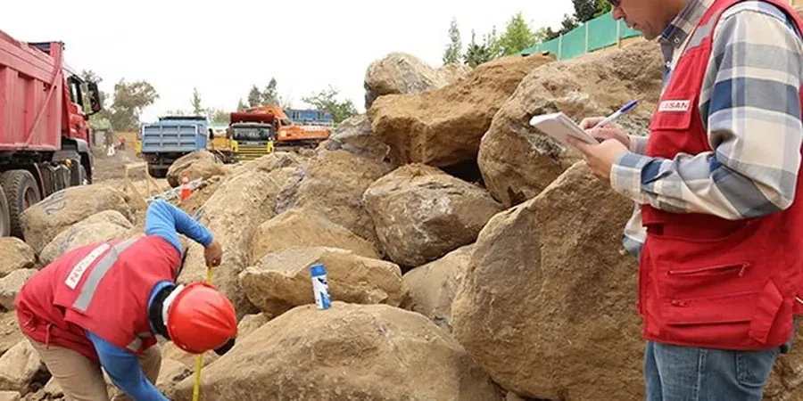

Bem-vindo à nossa unidade em São Paulo, onde oferecemos soluções completas em geotecnia para projetos urbanos e industriais na maior metrópole da América Latina. Compreendemos as particularidades do subsolo paulistano, desde os solos residuais de alteração de gnaisses e migmatitos até os depósitos de argilas orgânicas das várzeas. Nossa equipe combina ensaios de campo calibrados, como o ensaio de placa de carga, com análises laboratoriais precisas para garantir fundações seguras e econômicas. Atuamos em estreita colaboração com construtoras e órgãos municipais, assegurando que cada relatório atenda às exigências normativas e ao Plano Diretor da cidade.

Imagem técnica de referência — São Paulo
Metodologia e escopo
O subsolo de São Paulo é marcado por uma complexa interação entre solos residuais jovens, originados da alteração de rochas cristalinas do embasamento (gnaisses, granitos e migmatitos), e sedimentos quaternários das planícies aluviais dos rios Tietê, Pinheiros e Tamanduateí. Nas encostas, predominam solos arenosos e siltosos com matacões, enquanto nas várzeas encontram-se camadas compressíveis de argila mole orgânica, com espessuras que podem ultrapassar 20 metros. O lençol freático é geralmente raso nas baixadas, exigindo cuidados especiais em escavações e rebaixamentos.
Além dos desafios de compressibilidade e colapsibilidade, a região apresenta potencial de erosão laminar e voçorocas em áreas de solo residual mais arenoso. A atividade sísmica é baixa, mas a vibração induzida por tráfego pesado e obras de tunelamento (como as do Metrô) deve ser monitorada em estruturas sensíveis. Para projetos de pavimentação e contenções, utilizamos o ensaio de consolidação edométrica para prever recalques, e o ensaio de velocidade de ondas de cisalhamento para caracterização dinâmica do maciço.
Considerações locais
Nossa equipe em São Paulo possui experiência consolidada em obras de grande porte, como edifícios corporativos, shoppings, linhas de metrô e aeroportos. Dispomos de laboratório geotécnico acreditado com equipamentos calibrados para ensaios de caracterização, resistência e compressibilidade. Mantemos parcerias com universidades locais (USP, Unicamp) para pesquisas aplicadas e atualização normativa. Todos os projetos são elaborados em conformidade com as normas ABNT e com as exigências dos órgãos licenciadores municipais e estaduais, garantindo segurança jurídica e técnica.
No Brasil, a geotecnia é regida principalmente pela ABNT NBR 6484 (execução de SPT), NBR 7250 (amostragem indeformada), NBR 6122 (projeto e execução de fundações) e NBR 11682 (estabilidade de encostas). Para ensaios de laboratório, seguimos as normas ABNT NBR 16553 (cisalhamento direto) e D2435 (consolidação), adaptadas ao contexto tropical. Em projetos de contenção e taludes, aplicamos a NBR 11682 e, quando necessário, a EN 1997-1 para análises de estados-limite. Todos os laudos são emitidos em conformidade com a legislação municipal e as diretrizes do CREA-SP.
Vídeo explicativo
Perguntas comuns
Quais são os principais desafios geotécnicos para fundações em São Paulo?
Os desafios variam conforme a região: nas várzeas, as argilas moles exigem fundações profundas (estacas) ou tratamento do solo; nas encostas, a presença de matacões e solos residuais requer investigação detalhada e, por vezes, escavação especial. O lençol freático elevado nas baixadas demanda sistemas de rebaixamento bem projetados para evitar instabilidade de taludes e danos a vizinhanças.
Como a geologia local influencia o projeto de pavimentos em São Paulo?
Os solos residuais das áreas mais altas geralmente oferecem boa capacidade de suporte, mas a presença de argilas expansivas em algumas regiões exige análise de expansão e contração. Nas várzeas, a baixa resistência e alta compressibilidade dos solos orgânicos demandam reforço do subleito ou substituição do material. Ensaios como CBR e de placa de carga são essenciais para dimensionamento.
Quais licenças e normas ambientais são exigidas para obras geotécnicas em São Paulo?
Obras que envolvam movimentação de terra, rebaixamento de lençol freático ou escavações profundas necessitam de licenciamento junto à Prefeitura (via Aprov) e, em alguns casos, à CETESB. A NBR 13000 (gerenciamento de resíduos) e a legislação municipal de uso do solo devem ser seguidas. Relatórios geotécnicos devem ser assinados por engenheiro civil com registro no CREA-SP.
Como é feita a investigação geotécnica em terrenos com matações na zona sul de São Paulo?
Em áreas como Jardins e Morumbi, onde há frequentes matações de gnaisse, a investigação combina sondagens SPT com trado mecanizado e, se necessário, sondagem rotativa com recuperação de testemunhos. A localização dos matações é mapeada com ensaios geofísicos (como sísmica de refração) para orientar a locação de estacas e evitar obstáculos. A experiência local é fundamental para interpretar os perfis.
Localização e área de serviço
Atendemos projetos em São Paulo e sua zona metropolitana.